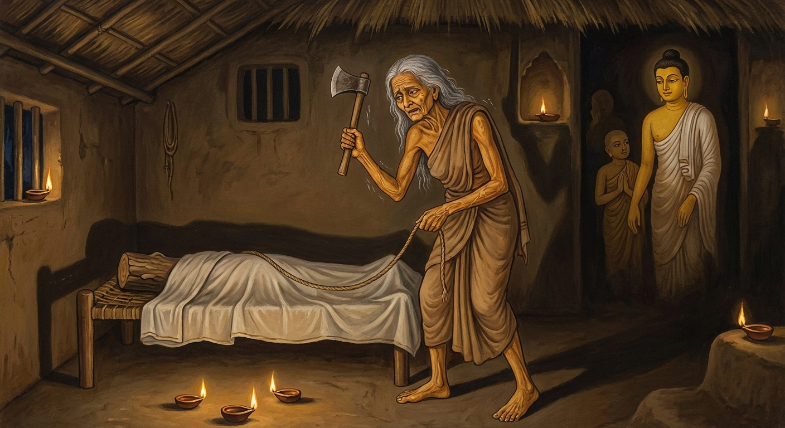

1. අසාතමන්ත ජාතකය (61)
“අසා ලොකිත්ථියො නාමාති” යන මේ දේශනාව බුදුරජාණන් වහන්සේ ජේතවනාරාමයෙහි වැඩ වසන සමයෙහි, ශාසනය පිළිබඳ කලකිරුණු භික්ෂුවක් අරභයා වදාළ සේක. එහි කථාව උම්මග්ග ජාතකයෙහි මතු සඳහන් වන්නේය. බුදුරජාණන් වහන්සේ ඒ භික්ෂුව අමතා, “මහණ, ස්ත්රීහු නම් අමිහිරි ය, අසත්පුරුෂ ය, ලාමක ය, පහත් ය. ඔබ මෙවැනි ලාමක ස්ත්රියක් නිසා කුමකට කලකිරුණේ දැ” යි වදාරා අතීත කථාව ගෙනහැර දැක්වූ සේක.
යටගිය දවස බරණැස් නුවර බ්රහ්මදත්ත රජු රජ කරන සමයෙහි බෝධිසත්වයෝ ගන්ධාර රට තක්ෂිලාවෙහි බමුණු කුලයක ඉපද වැඩිවියට පත්ව, ත්රිවේදයෙහි හා සියලු ශිල්පයන්හි කෙළවරට පැමිණ දිසාපාමොක් ආචාර්යවරයා වූහ. එකල බරණැස් නුවර එක් බමුණු කුලයක පුතකු උපන් දිනයෙහි පටන් ගින්නක් දල්වා නොනිවෙන සේ තැබූහ. ඉන්පසු ඒ බමුණු කුමරා සොළොස් වියට පැමිණි කල්හි මවුපියෝ මෙසේ කීහ. “පුත්රය, අපි ඔබ උපන් දින පටන් ගිනි දල්වා තැබුවෙමු. ඉදින් ඔබ බඹලොව යනු කැමති නම්, ඒ ගින්න රැගෙන වනයට පිවිස ගිනි දෙවියන් නමදිමින් බඹලොවට යන්න. ඉදින් ගිහි ගෙයි වසනු කැමති නම්, තක්ෂිලාවට ගොස් දිසාපාමොක් ඇදුරුතුමා ළඟ ශිල්ප හදාරා ගෘහ ජීවිතය ගත කරන්න.” මානවකයා, “මට වනයෙහි හිඳ ගිනි පිදීමට නොහැක. ගෘහ ජීවිතය ම ගත කරමි” යි මවුපියන් වැඳ, ගුරු පඬුරු වශයෙන් දහසක් ගෙන තක්ෂිලාවට ගොස් ශිල්ප හදාරා ආපසු පැමිණියේය.
මවුපියෝ වනාහි ඔහු ගිහි ගෙයි විසීමට අකමැති වූවාහු, වනයෙහි ගිනි දෙවියන් පුදවනු කැමැත්තෝ වූහ. ඉක්බිති ඔහුගේ මව ස්ත්රීන්ගේ දෝෂ දක්වා ඔහු වනයට යවනු කැමති ව, “ඒ ආචාර්යවරයා නුවණැති ය, දක්ෂ ය, මගේ පුතුට ස්ත්රීන්ගේ දෝෂ කියා දීමට සමත් වන්නේ ය” යි සිතා මෙසේ කීවාය. “දරුව, ඔබ විසින් ශිල්ප හදාරන ලද්දේ ද?” “එසේ ය මෑණියනි.” “දරුව, ඔබ විසින් ‘අසාත මන්ත්රය’ හදාරන ලද්දේ ද?” “නැත මෑණියනි.” “දරුව, ඔබ අසාත මන්ත්රය නොහදාළේ නම් කවර ශිල්පයක් හදාළේ ද? යන්න, ගොස් එය හදාරා එන්න.” මානවකයා ද “යහපතැ” යි පිළිගෙන නැවත තක්ෂිලාව බලා පිටත් විය. ඒ දිසාපාමොක් ඇදුරුතුමාගේ මව වනාහි අවුරුදු එකසිය විස්සක් වයසැති මහලු කාන්තාවකි. ඒ ඇදුරුතුමා ඇය සියතින් නාවමින්, කවමින්, පොවමින් සාත්තු සප්පායම් කරයි. අන් මිනිස්සු ඔහු එසේ කරනු දැක පිළිකුල් කරති. ඔහු මෙසේ සිතීය: “මම වනයට පිවිස එහි දී මගේ මවට උපස්ථාන කරමින් වසන්නේ නම් මැනවි.” ඉක්බිති ඔහු ජල පහසුව ඇති හුදෙකලා වන පෙදෙසක පන්සලක් කරවා, ගිතෙල් සහල් ආදිය ගෙන්වාගෙන, මව ඔසවාගෙන එහි ගොස් මවට උපස්ථාන කරමින් වාසය කළේය.
ඒ මානවකයා ද තක්ෂිලාවට ගොස් ගුරුතුමන් නොදැක, “ඇදුරුතුමා කොහි ද?” යි විචාරා තොරතුරු අසා, ඔහු වෙසෙන වන පෙදෙසට ගොස් වැඳ සිටියේය. එවිට ඇදුරුතුමා, “දරුව, කුමක් නිසා ඉතා ඉක්මනින් ආපසු ආවෙහි දැ” යි ඇසීය. “ගුරුතුමනි, ඔබතුමා මට අසාත මන්ත්රය ඉගැන්වූයේ නැත.” “දරුව, අසාත මන්ත්රය ඉගෙන ගත යුත්තක් යැයි ඔබට කීවේ කවරෙක් ද?” “ඇදුරුතුමනි, මගේ මව ය.” බෝධිසත්වයෝ, “අසාත මන්ත්රය යැයි දෙයක් නැත. මොහුගේ මව ස්ත්රී දෝෂයන් මොහුට අවබෝධ කරවනු කැමති වූවා වන්නී ය” යි සිතූහ. ඉක්බිති ඔහු අමතා, “යහපයි දරුව, මම ඔබට අසාත මන්ත්රය දෙමි. ඔබ අද පටන් මගේ තැන සිට, මගේ මව සියතින් නහවමින්, කවමින්, පොවමින් උවටැන් කරන්න. ඇගේ අත්, පා, හිස, පිට පිරිමැදීම් ආදිය කරන විට, ‘ආර්යාවනි, ජරාවට පත් වූ මේ කාලයේත් ඔබගේ ශරීරය මෙබඳු නම්, තරුණ කාලයේ දී කෙබඳු වන්නට ඇද්දැ’ යි කියමින් අත් පා ආදිය වර්ණනා කරන්න. තව ද, ඒ අතර මගේ මව යමක් කියන්නේ ද, එය ලැජ්ජා නොවී, නොසඟවා මට කියන්න. මෙසේ කළ හොත් අසාත මන්ත්රය ලබන්නෙහි ය. එසේ නොකළහොත් නොලබන්නෙහි ය” යි කීවේය. මානවකයා “එසේ ය ඇදුරුතුමනි” යි ඔහුගේ වචනය පිළිගෙන එතැන් පටන් කියන ලද පරිදි ඒ සියල්ල කළේය.
ඉක්බිති ඒ මානවකයා ඇය වර්ණනා කරන කල්හි, “මොහු මා සමඟ රමණය කිරීමට කැමති වනු ඇතැ” යි අන්ධ වූ, දිරාගිය මහලු කාන්තාවගේ සිත තුළ කෙලෙස් උපන්නේය. දිනක් ඕ තොමෝ තමාගේ සිරුර වර්ණනා කරන මානවකයාගෙන්, “මා සමඟ රමණය කිරීමට කැමති දැ” යි ඇසුවාය. “ආර්යාවනි, මම නම් කැමැත්තෙමි. එහෙත් ගුරුතුමා ගරු කටයුතු කෙනෙකි.” “ඉදින් මා කැමති නම් මගේ පුත්රයා මරන්න.” “මම ගුරුතුමා ළඟ මෙපමණ සිප්සතර හදාරා, කෙලෙස් මාත්රයක් නිසා කෙසේ නම් ගුරුතුමා මරම් ද?” “එසේ නම් ඉදින් ඔබ මා අත් නොහරින්නේ නම්, මම ම ඔහු මරන්නෙමි.” මෙසේ ස්ත්රීහු නම් වංක ය, ලාමක ය, පහත් ය. මෙබඳු වයසක සිටියදීත් රාග සිත් උපදවා කෙලෙස් ගැති ව, මෙතරම් උපකාර කළ පුත්රයා මැරීමට කැමති වූවාය. මානවකයා ඒ සියලු පුවත් බෝධිසත්වයන්ට දැන්වීය.
බෝධිසත්වයෝ, “මානවකය, මට මෙම කරුණ දැන්වීම ඉතා යහපතැ” යි කියා මවගේ ආයුෂ පිරික්සා බලන්නේ, අද ම මියයන බව දැන, “එව මානවකය, ඇය විමසා බලමු” යි අත්තික්කා ගසක් කපා තමාගේ ප්රමාණයට ලී රුවක් සාදා, හිසෙහි සිට පොරවා, තමා නිදන ඇඳෙහි උඩු බැල්ලෙන් තබවා, එයට රැහැනක් බැඳ අතවැසියාට මෙසේ කීහ. “දරුව, පොරවක් ගෙන ගොස් මගේ මවට සංඥාවක් දෙන්න.” මානවකයා ගොස්, “ආර්යාවනි, ඇදුරුතුමා පන්සලෙහි තමාගේ ඇඳේ නිදා සිටියි. මා විසින් රැහැන් සලකුණක් යොදා ඇත. මේ පොරව ගෙන ගොස් හැකි නම් ඔහු මරන්න” යි කීවේය. “ඔබ මා අත් නොහරින්නෙහි නේද?” “මම කුමකට ඔබ අත් හරින්න ද?” ඇය පොරව ගෙන වෙවුලමින් නැඟිට, රැහැන් සලකුණ ඔස්සේ ගොස්, අතින් පිරිමැද “මේ මගේ පුත්රයා ය” යි සිතා, ලී රූපයේ මුහුණෙන් සළුව ඉවත් කොට, “එක පහරින් ම මරන්නෙමි” යි ගෙලට පහර දුන්නාය. ‘ටං’ යන ශබ්දය නැඟුණු කල්හි එය ලීයක් බව දැන ගත්තාය. එකෙනෙහි බෝධිසත්වයන් පැමිණ “මෑණියනි, කුමක් කරන්නෙහි දැ” යි ඇසූ කල්හි, “මම රැවටුණෙමි” යි සිතා එතැන ම මැරී වැටුණාය. එදින ඇය තමාගේ පන්සලෙහි නිදා සිටිය ද ඒ මොහොතේ මරණය සිදුවිය යුතු ම ය.

බෝධිසත්වයෝ ඇය මළ බව දැන, මළ සිරුර පිළිබඳ කටයුතු කර, දර සෑය නිවා, වන මල්වලින් පුදා, මානවකයා රැගෙන පන්සල් දොරටුවෙහි හිඳ අවවාද කළහ. “දරුව, වෙන ම අසාත මන්ත්රයක් කියා දෙයක් නැත. අසාත (අමිහිරි/ලාමක) නම් ස්ත්රීහු ය. නුඹගේ මව ‘අසාත මන්ත්රය ඉගෙන ගනු’ යැයි කියා මා වෙත එවන ලද්දේ ස්ත්රීන්ගේ දෝෂ දැන ගැනීම සඳහා ය. දැන් මගේ මවගේ ක්රියාවෙන් ඒ අසාත මන්ත්රය ප්රත්යක්ෂ වශයෙන් ම දකින ලදී. මේ කරුණෙන් ‘ස්ත්රීන් නම් අසාත ය, ලාමක ය, පහත් ය’ යි දැන ගන්න.” මෙසේ අවවාද දී ඔහු පිටත් කර හැරියේය. මානවකයා ද ගුරුතුමා වැඳ මවුපියන් වෙත ගියේය. ඉක්බිති මව, “දරුව, ඔබ අසාත මන්ත්රය ඉගෙන ගත්තෙහි දැ” යි ඇසුවාය. “එසේ ය මෑණියනි.” “දැන් ඔබ කුමක් කරන්නෙහි ද? පැවිදි වී ගිනි පුදන්නෙහි ද? නැතිනම් ගිහිගෙයි වසන්නෙහි ද?” එවිට මානවකයා, “මෑණියනි, මා විසින් ප්රත්යක්ෂ වශයෙන් ම ස්ත්රීන්ගේ දෝෂ දකින ලදී. ගිහි ගෙයින් මට වැඩක් නැත. මම පැවිදි වන්නෙමි” යි තමාගේ අදහස ප්රකාශ කරමින් මේ ගාථාව කීවේය.
“අසා ලොකිත්ථියො නාම - වෙලා තාසං න විජ්ජති,
සාරත්තා ච පගබ්භා ච - සිඛී සබ්බඝසො යථා,
තා හිත්වා පබ්බජිස්සාමි - විවෙකමනුබ්රෑහයන්ති.”
“ලෝකයෙහි ස්ත්රීහු නම් ලාමක ය; නොහොත් තමන් කෙරෙහි ඇලුණවුන්ට දුක් දෙන්නාහු ය. ඔවුන්ට සීමාවක් නැත. රාගයෙන් රත් වූවෝ ය. ප්රගල්භ (ලැජ්ජා බිය නැති) ය. සියල්ල කා දමන ගින්න මෙන් පුරුෂයන් විශේෂයෙන් ඇසුරු කරති. ඔවුන් හැරදා විවේකය වඩමින් මම පැවිදි වෙමි.”
එහි ‘අසා’ යනු සැප නැත්තෝ ය, පහත් ගති ඇත්තෝ ය යන්නයි. නොහොත් ‘සාත’ යන්නෙන් සැපය කියනු ලැබේ; ඒ සැපය ඔවුන් කෙරෙහි නැත. තමා පිළිබඳ සිත් ඇත්තවුන්ට දුක ම දෙන්නේ ය යන්නෙන් ‘අසාත’ නම් වේ. දුක ය, දුකට හේතු වූවෝ ය යන අර්ථයි. මේ කාරණය තහවුරු කිරීමට මේ ගාථාව ගෙනහැර දැක්විය යුතුයි:
“මායා චෙතා මරීචී ච, සොකො රොගො චුපද්දවො;
ඛරා ච බන්ධනා චෙතා, මච්චුපාසා ගුහාසයා;
තාසු යො විස්සසෙ පොසො,
සො නරෙසු නරාධමො”ති.
“මේ ස්ත්රීහු මායාවකි; මිරිඟුවකි; ශෝකයකි; රෝගයකි; උවදුරකි; කෲර බන්ධනයකි; මොවුහු ගුහාවක වාසය කරන මරැ පාශයකි (මළ පුඬුවකි). යම් කෙනෙක් ඔවුන් විශ්වාස කරත් ද, ඔවුහු මිනිසුන් අතර අධම මිනිස්සු ය.”
‘ලොකිත්ථියො’ යනු ලොවෙහි ස්ත්රීන් ය. ‘වෙලා තාසං න විජ්ජති’ යනු, මෑණියනි, ඒ ස්ත්රීන්ට කෙලෙස් උපන් කල්හි වේලාවක් හෝ සංයමයක් හෝ සීමාවක් හෝ ප්රමාණයක් නම් නැත. ‘සාරත්තා ච පගබ්භා ච’ යනු ඔවුන්ට සීමාවක් නැත; පස්කම් සැපයෙහි ඇලුණාහු ය, ගැලුණාහු ය. එසේ ම කාය, වාක්, මනෝ යන ත්රිවිධ අසංවරයෙන් යුක්ත බැවින් මොවුහු ‘පගබ්භ’ නම් වෙති. මොවුන් කෙරෙහි කය ආදී ද්වාරයන්හි සංවරයක් නම් නැත. කෑදර කපුටකුට සමාන කොට දක්වයි. ‘සිඛී සබ්බඝසො යථා’ යනු, මෑණියනි, යම් සේ ගිනි ජාලාවෙහි ‘සිඛී’ නම් වූ ගිනි සිළුව අසූචි ආදී අපිරිසිදු දේ ද, ගිතෙල් මී පැණි ආදී පිරිසිදු දේ ද, කැමති දේ ද, අකැමති දේ ද යම් යමක් ලබයි ද ඒ සියල්ල කා දමයි. එම නිසා ‘සබ්බඝස’ (සියල්ල කන) යැයි කියනු ලැබේ. එසේ ම ඒ ස්ත්රීහු ද ඇත් ගොවු, ගොපලු ආදී හීන කුල ඇත්තන් හෝ වේවා, හීන ක්රියා ඇත්තන් හෝ වේවා, රජවරුන් ආදී උසස් කුල ඇත්තන් හෝ වේවා, උසස් ක්රියා ඇත්තන් හෝ වේවා, ඒ උසස් පහත් බවක් නොසලකා, කාමාශ්වාද වශයෙන් කෙලෙස් හැඟීම් ඇති වූ කල්හි යම් යම් අයකු ලබත් ද ඒ සියල්ලන්ව ම සේවනය කරති. සියල්ල කා දමන ගිනි සිළුව මෙන් වෙති. එහෙයින් මොවුන් ගිනි සිළුව වැනි යැයි දත යුතුයි.
‘තා හිත්වා පබ්බජිස්සාමි’ යනු, මම ඒ පහත් වූ, දුකට හේතු වූ ස්ත්රීන් අත්හැර වනයට පිවිස තවුස් පැවිද්දෙන් පැවිදි වන්නෙමි යන්නයි. ‘විවෙකමනුබ්රෑහයන්ති’ යනු කාය විවේකය, චිත්ත විවේකය, උපධි විවේකය යැයි වෙන්වීම් තුනකි. එයින් මෙහි කාය විවේකය ද, චිත්ත විවේකය ද සුදුසු ය. මෙයින් කියන ලද්දේ, “මෑණියනි, මම පැවිදි ව, කසින පිරියම් කොට, අට සමවත් හා පස් අභිඥා උපදවා, ගණයා කෙරෙන් කය ද, ක්ලේශයන් කෙරෙන් සිත ද වෙන් කොට, මේ විවේකයන් වඩමින් බඹලොව යන්නෙමි; මේ ගිහි ගෙයින් මට වැඩක් නැත” යන්නයි. මෙසේ ස්ත්රීන්ට ගරහා, මවුපියන් වැඳ, වනයට වැදී පැවිදි ව, කියන ලද ආකාරයෙන් විවේකය වඩමින් බඹලොව පරායණ වූයේය.
බුදුරජාණන් වහන්සේ ද, “මහණ, මෙසේ ස්ත්රීන් නම් වංක ය, පහත් ය, දුක් දෙන සුළු ය” යි ස්ත්රීන්ගේ අගුණ වදාරා චතුරාර්ය සත්යය ප්රකාශ කළ සේක. දේශනාව කෙළවර ඒ භික්ෂුව සෝවාන් ඵලයෙහි පිහිටියේය. බුදුරජාණන් වහන්සේ පූර්ව අපර සන්ධි ගළපා ජාතකය නිමවා වදාළ සේක. “එකල මව නම් භද්දකාපිලානී වූවාය. පියා මහා කාශ්යප විය. අතවැසියා ආනන්ද ය. ආචාර්යවරයා වනාහි මම ම වීමි.”
පළමුවන අසාතමන්ත ජාතක වර්ණනාව නිමි.